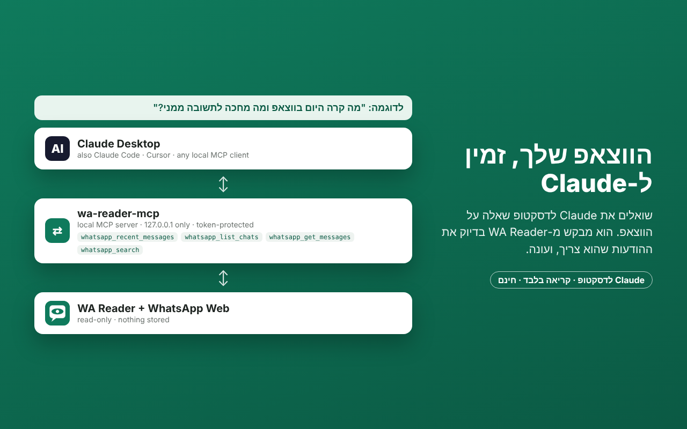

WA Reader
שואלים את Claude "מה קרה היום בווצאפ?", והוא קורא בעצמו. WhatsApp מתחבר לכלי ה-AI שלך דרך MCP. קריאה בלבד, חינם וקוד פתוח.

קריאה בלבדאי אפשר לשלוח, למחוק או לסמן כנקרא, ולא נשלח וי כחול.
שום דבר לא נשמרה-AI מבקש ומקבל רק את מה שצריך, ישירות מ-WhatsApp Web. אין שרת ואין מעקב.
Claude לדסקטופ בלחיצההרחבה שמתקינים בלחיצה כפולה, בלי Node.js. עובד גם עם Claude Code ו-Cursor. לא עובד עם claude.ai בדפדפן ובטלפון.
שליטה מלאהשיחות מוחרגות לא מגיעות ל-AI אף פעם. כיבוי בלחיצה אחת.
 נבנה על ידיאיתן | דיגיטציה ארגוניתמערכות, אוטומציות וסוכני AI לעסקים. רוצים לחבר את הווצאפ ל-CRM או לבנות סוכן AI לעסק?
לשיחת ייעוץ חינם ←
נבנה על ידיאיתן | דיגיטציה ארגוניתמערכות, אוטומציות וסוכני AI לעסקים. רוצים לחבר את הווצאפ ל-CRM או לבנות סוכן AI לעסק?
לשיחת ייעוץ חינם ←